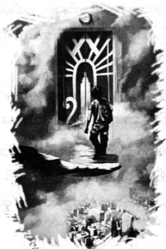

ပလ္လင်ပေါ် တက်ထိုင်ခြင်း
ဆီလီနာအား ပွေ့ထားရင်း ကလဲရစ် မေးလိုက်သည်။
“နင် ဘာတွေ လျှောက်လုပ်တာလဲ …”
“နင် … နားမထောင်ဘူး … အဆောင်က … နင့်နောက်ပဲ လိုက်ကြမှာ …”
“ဒါနဲ့ပဲ ငါ့ချပ်ဝတ်တန်ဆာကို ခိုးဝတ်တယ်ပေါ့ … ငါနဲ့ ခရစ္စ ကင်းလှည့်တုန်း နင်က ငါ့အယောင်ဆောင်တယ်ပေါ့ ….”
ကလဲရစ်က မယုံနိုင်ဟန်ဖြင့် သူမ၏ အဆောင်သားများကို မေးလိုက်သည်။
“နင်တို့ တစ်ယောက်မှ ဒါကို မသိဘူးလား …”
အေးရီးစ်အဆောင်သားများမှာ ရုတ်ချည်းပင် သူတို့၏ ဘွတ်ဖိနပ်များကို စိတ်ဝင်စားကုန်ကြသည်။
“သူတို့ကို အပြစ်မတင်ပါနဲ့ … သူတို့က နင်လို့ပဲ ငါ့ကို ယုံကြည်ချင်နေကြလို့ပါ …”
ကလဲရစ်က ငိုရှိုက်ရင်း …
“ဘာလို့ အဲလောက် တုံးရတာလဲ … ဘာလို့ ဒရာကွန်ကို အတင်း ဝင်တိုက်ရတာလဲ”
“အားလုံး ငါ့အမှားတွေချည်းပဲ … ဒရာကွန်၊ ချာလီသေတာ၊ သင်တန်းတစ်ခုလုံး အန္တရာယ်ထဲ ရောက်နေတာ …”
ဆီလီနာ ပြောရင်း မျက်ရည်များ စီးကျလာ၏။
“တော်တော့ … ပေါက်ကရတွေ မပြောနဲ့ …”
လက်ဝါး ဖြန့်ပြလိုက်လျှင် ဆီလီနာ့လက်ထဲတွင် တံစဉ်ပုံ ဆွဲသီးပါသော ငွေကြိုးလေးကို တွေ့ရပြီး ခရိုနော့စ်၏ အမှတ်အသားပင် ဖြစ်သည်။
ပါစီ့ ရင်တစ်ခုလုံး အေးခဲသွားပြီဟု ခံစားလိုက်ရသည်။
“နင်က သူလျှိုပဲ …”
ဆီလီနာ ကြိုးစား၍ ခေါင်းညိတ်လိုက်သည်။
“ချာလီနဲ့ငါ မကြိုက်ကြခင်က လုပ်ခ်က ငါ့အပေါ် သိပ်ကောင်းခဲ့တယ် … အရမ်းသဘောကျစရာ ကောင်းတာပဲ … နောက်ပိုင်းကျ သူ့ကို ငါ ဆက်မကူညီချင်ပေမယ့် အားလုံးကို ဖွင့်ပြောလိုက်မယ်လို့ ခြိမ်းခြောက်တယ်… ငါ … ငါ လုပ်နေတာကြောင့် လူတွေ သေတာ သက်သာမယ်လို့လည်း ကတိပေးတယ် … ချာလီကို ဒုက္ခမပေးပါဘူးတဲ့ … ငါ့ကို ညာသွားတာ …”
အန်နာဘတ်ကို ပါစီ လှမ်းကြည့်မိသည်။ အန်နာဘတ်မျက်နှာမှာ ဖြူဖျော့ နေပြီး ဘာလုပ်ရမှန်း မသိသည့်သူ နှင့်သာ တူနေသည်။ အနောက်တွင် တိုက်ပွဲမှာ အရှိန်အဟုန်နှင့် ဆက်ဖြစ်နေဆဲ။ အေးရီးစ်အဆောင်သားများကို ကလဲရစ် အမိန့် ပေးလိုက်သည်။
“သွား … ဆင်းတောတွေကို သွားကူ … တံခါးကို သေချာခုခံကြ … သွား …”
အေးရီးစ်အဆောင်သားများ တိုက်ပွဲရှိရာဆီ ပြေးဝင်သွားကြသည်။ ဆီလီနာမှာ အသက်ကို နာကျင် ပင်ပန်းစွာ ဖြင့် ရှူနေ၏။
“ငါ့ကို ခွင့်လွှတ်ကြပါ ……”
“နင် မသေရဘူး …”
ကလဲရစ်မှာ လက်လျှော့ချင်ပုံ မရသေး။ သို့သော် ဆီလီနာမှာ အနီးရှိ လူများကို မမြင်တော့ဘဲ အဝေးသို့သာ ငေးကြည့်နေသည်။
“ချာလီ … ငါ လာပြီ ချာလီ …”
ထို့နောက် သူမဆီမှ ဘာသံမှ မကြားရတော့။ ကလဲရစ်မှာ ဆီလီနာကို ပွေ့ဖက်ကာ ငိုနေပြီး သူမကို ခရစ္စက နှစ်သိမ့်နေသည်။ နောက်ဆုံးတွင် ဆီလီနာ၏ မျက်လုံးများကို အန်နာဘတ်က ပိတ်ပေးလိုက်သည်။
“ငါတို့ တိုက်ပွဲဝင်မှဖြစ်မယ် … ငါတို့ကို သူ့အသက် ပေးပြီး ကူညီခဲ့တာ … ဒါကို ငါတို့ တန်ဖိုးထားရမယ် …”
အန်နာဘတ်အသံမှာ အက်ကွဲနေ၏။ မျက်ရည်များသုတ်ရင်း ကလဲရစ်က ပြောသည်။
“သူက သူရဲကောင်း … နားလည်လား … သူရဲကောင်း”
ပါစီ ခေါင်းညိတ်ပြလိုက်သည်။
“သွားစို့ …”
ကျဆုံးသွားသော အေးရီးစ်အဆောင်သား တစ်ယောက်၏ ဓားကို ကလဲရစ် ကောက်ယူလိုက်သည်။
“ခရိုနော့စ် … သေဖို့သာပြင်ထား …”
♦️🌟♦️
အင်ပါယာစတိတ် အဆောက်အအုံအနီးမှ ရန်သူများကို သူ့ ဦးဆောင်၍ မောင်းထုတ်ပစ်ခဲ့ကြသည်ဟု ပါစီ ကြွားချင်သည်။ သို့သော် တကယ်တမ်းတွင် တစ်ယောက်တည်း ဦးဆောင်သွားသူမျာ ကလဲရစ် ဖြစ်၏။ ချပ်ဝတ် တန်ဆာနှင့် မှော်လှံတံ မရှိသည့်တိုင် ကလဲရစ်မှာ မိစ္ဆာတစ်ကောင်ထက် ပို၍ကြောက်စရာ ကောင်း၏။ မြင်းရထားကို တိုက်တန်စစ်တပ်ထဲ အတင်းမောင်းချသွားပြီး ရှေ့တွင် တွေ့သမျှကို နင်းခြေပစ်ခဲ့သည်။
သူမ၏ တိုက်ခိုက်ပုံမှာ အလွန် စိတ်ဓာတ်တက်ကြွစရာဖြစ်သဖြင့် ကြောက်လန့်နေသော ဆင်းတောများပင် ပြန်၍ အင်အားစုစည်းလာကြသည်။ အမဲလိုက် အဖွဲ့ဝင်များမှာ မြားများကို ဆက်တိုက်ပစ်နေကြပြီး အေးရီးစ် အဆောင် သားများ မှာ စိတ်တိုင်းကျပင် ဓားစွမ်းပြနေကြ၏။ မိစ္ဆာများမှာ ၃၅ လမ်းဘက်သို့ ဆုတ်ခွာ သွားကြသည်။
ဒရာကွန်၏ အရိုးစုကြီးအား မျက်စိပေါက်များနေရာတွင် ကြိုးနှင့်ချိတ်ပြီး နောက် မြင်းရထားဖြင့် ဆွဲသွားရာ ကလဲရစ်မှာ တရုတ်နဂါးကို တစ်ယောက်တည်း ကနေသူနှယ် ရှိသည်။ ရန်သူနောက်မှ လိုက်လံတိုက်ခိုက်ရင်း အော်ဟစ် စိန်ခေါ် နေသည်။ ကလဲရစ်ခန္ဓာကိုယ်တွင် အနီရောင်အချို့ လင်းလက်နေသည်။
တာလီယာက
“ဒါ အေးရီးစ် … ကောင်းချီးပေးတာပဲ လူတွေမှာ တစ်ခါမှ ငါ မမြင်ဖူးဘူး”
ထိုခဏတွင် ကလဲရစ်မှာ ပါစီလိုပင် ကာယသိဒ္ဓိ ပြီးနေခဲ့သည်။ ရန်သူများ၏ လှံ၊ မြားတို့မှာ သူမကို မထိခိုက်နိုင်။
“ဒရာကွန်ကို နှိမ်နင်းခဲ့တဲ့ ကလဲရစ်ဆိုတာ ငါပဲ ...”
အော်ဟစ်ရင်း ကလဲရစ် စိန်ခေါ်နေ၏။
“အကုန်လုံး သတ်ပစ်မယ် … ခရိုနော့စ် ဘယ်မှာလဲ … သတ္တိရှိရင် ထွက်ခဲ့”
“ကလဲရစ် … တော်တော့ … ပြန်ဆုတ်ခဲ့ …”
ပါစီ အော်ဟစ်၍ ခေါ်လိုက်သည်။
“တိုက်တန်တွေရဲ့ အရှင်သခင်က ကြောက်တတ်တာလား … ‘လာခဲ့ စမ်းပါ’ …”
ရန်သူများဆီမှ ဘာသံမှ မကြားရ။ ဒရာကာနေးများ၏ ဒိုင်းနံရံနောက်သို့ အားလုံး ဆုတ်ခွာသွားကြသည်။ ကလဲရစ်မှာ မြင်းရထားကို ခေါက်တုံ့ခေါက်ပြန် မောင်းရင်း အားလုံးကို စိန်ခေါ်နေ၏။ ပေနှစ်ရာရှည်သော အရိုးစုကြီးကို ဆွဲသွားသဖြင့် ပလက်ဖောင်းကို ဓားတစ်ထောင်မကနင့် ဆွဲခြစ်သွားသလို ခံစားရသည်။
ထိုတစ်ခဏတွင် ဒဏ်ရာရသူများကို ပြုစုကုသပေးကြပြီး ဧည့်ခန်းထဲသို့ သယ်ခဲ့ကြသည်။ ရန်သူများ နောက်ဆုတ်သွားသည်မှာ ကြာလှပြီ ဖြစ်သော်လည်း ကလဲရစ်မှာ အရိုးစုကို ဆွဲသွားရင်း ခရိုနော့စ်ကို စိန်ခေါ်နေဆဲ ဖြစ်၏။
“သူ့ကို ငါ စောင့်ကြည့်ထားလိုက်မယ်… ကြာရင် ပင်ပန်းလာမှာပဲ … အဲတော့မှ အထဲခေါ်ခဲ့မယ် …” ဟု ခရစ္စက ဆိုသည်။
“သင်တန်းမှာကော … ဘယ်သူတွေ ကျန်ခဲ့သေးလဲ”
ခရစ္စက ခေါင်းခါရင်း …
“အားဂတ်စ်နဲ့ နတ်ကလေးတွေပဲ ကျန်တယ် … နဂါး ပီလီယပ်စ်ကတော့ သစ်ပင်ကို စောင့်နေတုန်းပဲ ...”
“သူတို့နဲ့ပဲ ကြာကြာတော့ခံနိုင်မှာ မဟုတ်ဘူး … ဘယ်လိုပဲဖြစ်ဖြစ် မင်းတို့ ရောက်လာတာ ဝမ်းသာစရာပဲ …”
ခရစ္စက ဝမ်းနည်းဟန်ဖြင့် ခေါင်းညိတ်ပြသည်။
“အရမ်းကြာသွားတာ ငါ စိတ်မကောင်းဘူး … ကလဲရစ်ကို ငါ ဖျောင်းဖျပါသေးတယ် … မင်းတို့အကုန် သေကုန် ရင် သင်တန်းကို စောင့်နေလည်း အလကားပဲလို့ ငါ ပြောတယ် … သူငယ်ချင်းအားလုံးက ဒီမှာပဲဟာ … ဆီလီနာ တစ်ယောက်ကို ရင်းလိုက်ရသလို ဖြစ်သွားတာ စိတ်မကောင်းစရာပဲ …”
“အမဲလိုက်အဖွဲ့ဝင်တွေ အစောင့်တာဝန် ယူလိမ့်မယ် … အန်နာဘတ်နဲ့ ပါစီ … နင်တို့ အိုလံပတ်စ်ကို သွားကြည့် ကြ … နောက်ဆုံး ခံစစ်ပြင်ဖို့ လိုလိမ့်မယ်လို့ ငါ ထင်နေတယ် ….”
ဧည့်ခန်းထဲတွင် တံခါးစောင့်ကို မတွေ့ရတော့။ တစ်ခန်းလုံးတွင် ဒဏ်ရာရထားသော သင်တန်းသားများ၊ အမဲလိုက် အဖွဲ့ဝင်များ၊ ဆေတာများနှင့် ပြည့်နေသည်။ ဓာတ်လှေကားနားတွင် ကော်နာ၊ ထရာဗစ် စတိုလ်တို့နှင့် ဆုံ၏။
ကော်နာက …
“ဆီလီနာ အကြောင်း ပြောနေကြတယ် … အဟုတ်ပဲလား”
ပါစီ ခေါင်းညိတ်လိုက်သည်။
“သူရဲကောင်း ပီပီသသ ကျဆုံးသွားရှာပြီ”
ထရာဗစ်က စိတ်မသက်မသာဖြင့် ...
“ငါ ကြားထားတာ ရှိသေးတယ် …”
“ဒါပဲ ရှိတယ် … ဒီ့ထက်ပို ဘာမှပြောစရာ မရှိဘူး …”
“အင်း … ဟုတ်ပါပြီ ... ဒီမှာ … ငါတို့ စဉ်းစားမိတာက တိုက်တန်စစ်တပ်ကြီး ဓာတ်လှေကားက တက်လာဖို့ အကြိမ် အတော်များများ လိုလိမ့်မယ်… ဘီလူးတွေဆို ဓာတ်လှေကားနဲ့ လုံးဝ မဆန့်ဘူး …”
“ငါတို့ အားသာချက်က အဲဒါပဲ … ဓာတ်လှေကားကို ဖျက်ပစ်လို့ မရဘူးလား”
“မှော်ပညာနဲ့ လုပ်ထားတာ … ပုံမှန်ဆို ကတ်လိုတယ် … ခက်တာက တံခါးစောင့် မရှိတော့တာပဲ အကာအကွယ် တွေ အရင်လို မထိရောက်တော့ဘူး ဆိုတာ ပြနေတာပဲ … ဘယ်သူမဆို အပေါ်ကို တက်လို့ ရနေပြီ …”
“ဒါဆို တံခါးနား မလာနိုင်အောင် တားဖို့ပဲ ရှိတယ် … ဧည့်ခန်းထဲမှာ ခုခံကြတာပေါ့ ..”
ထရာဗစ်က …
“စစ်ကူလိုနေပြီ … မိစ္ဆာတွေက ဆုံးမှာ မဟုတ်ဘူး … လာနေကြမှာပဲ … အချိန်တန်ရင် ငါတို့ ရှုံးသွားလိမ့်မယ် …”
“ဘယ်စစ်ကူမှ လာစရာမရှိဘူး” ဟု ကော်နာက သတိပေး၏။
မှန်ပြတင်းနားတွင် ကပ်ကာ ထိုင်နေသော မစ္စအိုလာရီကို ကြည့်ရင်း ပါစီ ပြောလိုက်သည်။
“လာချင်လာဦးမှာပါ …”
မစ္စအိုလာရီနား ပါစီ လျှောက်လာခဲ့သည်။ ခိုင်ရွန် ပတ်တီးစီးပေးထားသည့်တိုင် မစ္စအိုလာရီမှာ ထော့နင်း ထော့နင်း ဖြစ်နေဆဲပင်။ တစ်ကိုယ်လုံး၌လည်း ရွှံ့များ၊ သစ်ရွက်များ၊ မိစ္ဆာတို့၏ သွေးများ ပေပွနေ၏။
“ဟေး … မင်း ပင်ပန်းနေတာ သိပါတယ် … ဒါပေမဲ့ တစ်ခုတော့ ကူညီပါဦး”
မစ္စအိုလာရီ၏ နားနားကပ်ကာ ပါစီ တိုးတိုး ပြောလိုက်သည်။ မစ္စအိုလာရီ အရိပ်ခရီး နှင်သွားပြီးနောက် အန်နာဘတ် ရှိရာ ဧည့်ခန်းထဲ ပါစီ ပြန်ဝင်လာခဲ့သည်။ ဒဏ်ရာရထားသော ဆေတာဝ၀ကြီး ဘေး၌ ဒူးထောက် ထိုင်နေသော ဂရိုဗာကို သူတို့ တွေ့ရ၏။
“လီနီယပ်စ် …”
ဆေတာအိုကြီး၏ နှုတ်ခမ်းများ ပြာနှမ်းနေပြီး ဗိုက်တွင် လှံအကျိုးတစ်ချောင်း စိုက်ဝင်နေကာ ဆိတ်ခြေထောက် မှာလည်း ကျိုး၍နေ၏။ ပါစီတို့ကို ကြည့်ရန် ကြိုးစားသော်လည်း မြင်ပုံ မရတော့။
“ဂရိုဗာ …”
“ငါ ရှိတယ် လီနီယပ်စ် …”
လီနီယပ်စ်မှာ သူ့ကို ဆိုးဆိုးဝါးဝါး ဆက်ဆံခဲ့ဖူးသော်လည်း ယခုအခါ ဂရိုဗာ မငိုမိစေရန် ထိန်းနေရပုံပေါ်သည်။
“ငါတို့ နိုင်လိုက်ပြီလား …”
“ဒါပေါ့ … ခင်ဗျားကြောင့် ကျွန်တော်တို့ ရန်သူတွေကို မောင်းထုတ်လိုက်နိုင်ပြီ …”
ညာပြောရန် ဂရိုဗာ ဆုံးဖြတ်လိုက်ပုံရသည်။
“ငါ ပြောသားပဲ … ငါက တကယ့်ခေါင်းဆောင် …”
စကားမဆုံးမီမှာပင် နောက်ဆုံးအဖြစ် လီနီယပ်စ်၏ မျက်လုံးများ ပိတ်သွားခဲ့သည်။ လီနီယပ်စ် နဖူးပေါ် လက်တင်ရင်း ရှေးဟောင်းကောင်းချီးဂါထာ တစ်ခုကို ဂရိုဗာ ရေရွတ်လိုက်သည်။ ဆေတာအိုကြီး၏ ခန္ဓာကိုယ် ပြာကျ သွားပြီး မြေကြီး အချို့နှင့် အပင်သေးသေး တစ်ပင်သာ ကျန်ရစ်၏။
“လော်ရယ်ပင်လေးပါလား … ကံကောင်းလိုက်တဲ့ဆိတ် …”
အပင်လေးကို ဂရိုဗာ ကောက်ယူလိုက်သည်။
“ငါ … ဒီအပင်ကို အိုလံပတ်စ်က ဥယျာဉ်ထဲမှာ စိုက်ရမယ် …”
“ငါတို့လည်း အိုလံပတ်စ် သွားမလို့ပဲ … လိုက်ခဲ့ …”
ဓာတ်လှေကားထဲတွင် သီချင်းသံကိုနားထောင်ရင်း ပထမဆုံးအကြိမ် အိုလံပတ်စ်ကို လာခဲ့သည့်ခရီးအား သတိရ မိသည်။ ထိုစဉ်က ပါစီအသက် ဆယ့်နှစ်နှစ် သာရှိပြီး အန်နာဘတ်နှင့် ဂရိုဗာ ပါမလာနိုင်ကြ။ ယခု သူတို့ပါ ပါလာသည့် အတွက် ပါစီ ဝမ်းသာမိသည်။ ပြောရလျှင် ယခုစွန့်စားခန်းမှာ ပါစီတို့အတွက် နောက်ဆုံးခရီးစဉ် ဖြစ်သွားနိုင်၏။
“ပါစီ … လုပ်ခ်အကြောင်း နင် ပြောသမျှ အားလုံး မှန်တယ် ….”
ဆီလီနာ သေပြီးချိန်မှစကာ ပထမဆုံး ကြားရသော အန်နာဘတ်၏ စကားသံပင် ဖြစ်သည်။ စကား ပြောနေ သော်လည်း ဓာတ်လှေကားအထပ် နံပါတ်များ ပြောင်းသွားသည်ကိုသာ အန်နာဘတ် ငေးကြည့်နေ၏။ ပါစီနှင့် ဂရိုဗာတို့ တစ်ယောက်မျက်နှာ တစ်ယောက် ကြည့်မိကြသည်။
“စိတ်မကောင်းပါဘူး အန်နာဘတ်”
“လုပ်ခ်က လူဆိုးဆိုတာ နင် ငါ့ကို ပြောဖို့ ခဏခဏ ကြိုးစားခဲ့တယ် … ငါ … ငါ မယုံခဲ့ဘူး … ဒါပေမဲ့ သူ ဆီလီနာကို ဘယ်လိုအသုံးချခဲ့တယ် ဆိုတာ သိရတော့ ငါ … ငါ ယုံသွားပြီ … နင်လည်း ပျော်မှာပါ ...”
“ဟင့်အင်း … ဒါ ပျော်စရာမှ မဟုတ်တာ …”
ဓာတ်လှေကားနံရံကိုသာ ခေါင်းနှင့် မှီနေပြီး ပါစီ့ဘက်သို့ အန်နာဘတ် လုံးဝ လှည့်မကြည့်။
“ငါတို့ အတူတူ ပြန်နေရတာ ပျော်စရာပဲ … ငြင်းရ ခုံရတယ် … သေလုမြောပါး တိုက်ပွဲဝင်ရတယ် … ကြောက်စရာတွေ အများကြီး ကြုံရတယ် … ဟော … ရောက်ပြီ”
ဂရိုဗာ ပြောသည့်စကားအတိုင်းပင် ပါစီတို့ အိုလံပတ်စ်ဆီ ရောက်ခဲ့ပြီဖြစ်၏။ ပုံမှန်အားဖြင့် စည်ကားသိုက်မြိုက် လျက် ရှိတတ်သော အိုလံပတ်စ်မှာ ယခုအခါ စိတ်ဓာတ်ကျချင်စရာ နေရာတစ်ခု ဖြစ်လျက်ရှိသည်။ မီးရောင်ဟူ၍ မရှိပဲ လမ်းပေါ်တွင် လူသူကင်းရှင်းနေကာ အိမ်တံခါးများကို အသေရိုက်ပိတ်ထားကြသည်။ ပန်းခြံထဲတွင် ယာယီဆေးရုံ လုပ်ထားသဖြင့် ထိုနေရာ၌သာ လှုပ်ရှားမှုကို မြင်ရ၏။ ဝီလ်ဆိုလေ့စ်နှင့် အပိုလိုအဆောင်သားများမှာ ဒဏ်ရာရသူ များစွာ ကို ပြုစုပေးနေကြပြီး သစ်ပင်စောင့်နတ်သမီးများ၊ ရေနတ်သမီးများမှာ သဘာဝမှော်ပညာဖြင့် မီးလောင် ဒဏ်ရာများ၊ အဆိပ်သင့်ဒဏ်ရာများကို ကုသပေးကြသည်။
လော်ရယ်ပင်လေးကို ဂရိုဗာ စိုက်ပျိုးနေစဉ် ဒဏ်ရာရသူများကို ပါစီနှင့် အန်နာဘတ်တို့ လိုက်၍ အားပေး ကြသည်။ ခြေကျိုး၍ ပတ်တီး စီးထားရသော ဆေတာ၊ တစ်ကိုယ်လုံး ပတ်တီးများနှင့် ပြည့်နေသော သင်တန်းသားတို့ကို တွေ့ရပြီး အပိုလိုအဆောင်မှ တစ်ယောက်ကိုမူ သင်္ဂြိုလ်ရန် အဝတ်စဖြင့် ပတ်ထားကြ၏။ အဝတ်အောက်မှ လူကို မမြင်ရ သလို သိချင်စိတ်လည်း မရှိချေ။ ခေါင်းတစ်ခုလုံး အုံခဲနေသည့်တိုင် တတ်နိုင်သရွေ့ အားပေးစကား ပြောကြ၏။
“ခဏနေ တိုက်တန်တွေကို ထတိုက်နိုင်တော့မှာ” ဟု သင်တန်းသား တစ်ယောက်ကို ပါစီ အားပေးခဲ့သည်။
“လီနီယပ်စ် သစ်ပင်ဖြစ်သွားပြီ” ဟု ဂရိုဗာက ညည်းညူနေသော ဆေတာအား ပြောပြနေ၏။
သစ်ပင်ကို မှီထိုင်နေသော ဒိုင်အိုနစ်ဆပ်စ်၏ သားဖြစ်သူ ပေါ်လပ်စ်အား တွေ့ရပြီး လက်ကျိုးနေသည်မှ အပ ဘာမှ ဆိုးဆိုးဝါးဝါး ဒဏ်ရာရပုံ မရှိ။ ပေါ်လပ်စ်က အံတင်းတင်းကြိတ်ရင်း ဆို၏။
“လက်တစ်ဖက်တည်းနဲ့လည်း တိုက်နိုင်ပါသေးတယ် ….”
“ဟင့်အင်း … မင်း တိုက်ပွဲဝင်ခဲ့တာ များပြီ … ဒီမှာပဲနေပြီး ဒဏ်ရာရတဲ့သူတွေကို ပြုစုလိုက်ပါ …”
“ဒါပေမဲ့ …”
“အန္တရာယ်ကင်းအောင် နေပါ … ဟုတ်ပြီလား …”
ပေါ်လပ်စ် မျက်မှောင်ကုတ်ကာ စဉ်းစားနေ၏။ သူ့အဖေ၏ တောင်းဆိုမှုဟု ပါစီ ဖွင့်ပြော၍မဖြစ်ချေ။ ပေါ်လပ်စ် ရှက်သွားနိုင်သည်။ နောက်ဆုံးတွင် ပန်းခြံထဲ၌ ဆက်နေပါမည်ဟု ပေါ်လပ်စ် သဘောတူလိုက်ပြီး အနည်းငယ်လည်း စိတ်သက်သာရာရသွားသည်ဟု ပါစီ ထင်၏။
နန်းတော်ဘက်သို့ ပါစီတို့ ဆက်လျှောက်လာခဲ့ကြသည်။ ခရိုနော့စ်မှာ နန်းတော်ဆီသာ ဦးတည်လိမ့်မည်ဖြစ်ပြီး မည်သည့်နည်းနှင့်မဆို ပလ္လင်များရှိသည့် နတ်ဘုရားတို့၏ အဓိကခန်းမကြီးနေရာအား သွားရောက် ဖျက်ဆီးပေလိမ့်မည်။
ကျောက်သားကြမ်းပြင်တွင် ပါစီတို့ ခြေသံများသာ ပဲ့တင်ထပ်နေပြီး မျက်နှာကြက်မှ ကြယ်တာရာများ၏ ပုံကို မြင်ရဆဲဖြစ်သည်။ မီးပုံမှာ မီးကျီးခဲ နီနီများကိုသာ မြင်ရပြီး မိန်းကလေးငယ် ရုပ်သွင်နှင့် ဟက်စ်တီယာမှာ မီးဖိုနားတွင် ထိုင်ရင်း တုန်ယင်နေသည်။ ရေကန်ထဲတွင် အော့ပ်ဟိုင်အိုတောရပ်စ်မှာ ဝမ်းနည်းပန်းနည်းဖြင့် အသံပြုရင်း ကူးခတ်နေ၏။ အခန်းတစ်ခုလုံး အရိပ်မည်းများ ဖုံးလွှမ်းကာ စိတ်ဓာတ် ကျစရာ ဖြစ်နေသည်။
ဇုစ်၏ ပလ္လင်အောက်တွင် မတ်တတ်ရပ်ရင်း ကြယ်များကို မော့ကြည့်နေသူမှာ ရေချယ်လ် အဲလီဇဘက်ဒါရီ ဖြစ်ပြီး သူမ၏ လက်ထဲတွင် ဂရိမြေအိုးတစ်အိုးကို ကိုင်ထားသည်။
“ရေချယ်လ် … နင် ဘာလုပ်နေတာလဲ …”
ရေချယ့်လ်ပုံစံမှာ အိပ်မက်မှ နိုးလာသူနှယ်ရှိသည်။
“ခုနက တွေ့ခဲ့တာ … ဒါပန်ဒိုရာမြေအိုး မဟုတ်လား”
သူမ၏ မျက်လုံးများမှာ ပုံမှန်ထက် ပို၍ အရောင်တောက်ပနေကြသည်။
“မြေအိုးကို ချထားလိုက် …”
“အထဲက မျှော်လင့်ချက်ကို ငါ မြင်နေရတယ်… အတော်လေး ပျက်စီးလွယ်တဲ့ ပုံစံမျိုးပဲ …”
“ရေချယ်လ် …”
ပါစီ့ ခေါ်သံကို ကြားမှပင် ရေချယ်လ် သတိဝင်လာခဲ့ပြီး မြေအိုးကို သူ့ဆီ လှမ်းပေးလိုက်သည်။ ပါစီ့ လက်ထဲရှိ မြေအိုးမှာ ရေခဲတမျှ အေးစက်နေသည်။
အန်နာဘတ်က …
“ဂရိုဗာ … နန်းတော်ပတ်ဝန်းကျင်ကို လိုက်ရှာရအောင် … ဂရိမီးဗုံးတို့ ထောင်ချောက်တို့ တွေ့ချင်တွေ့မှာ …”
“ဒါပေမဲ့ …”
အန်နာဘတ် တံတောင်နှင့် တွက်လိုက်မှ ဂရိုဗာ ကမန်းကတန်း လက်ခံလိုက်သည်။ ထို့နောက် ဂရိုဗာကို အန်နာဘတ် အခန်းထဲမှ အတင်းဆွဲ ခေါ်ထုတ်သွား၏။ မီးပုံနားတွင် ဟက်စ်တီယာ ထိုင်နေဆဲဖြစ်သည်။
“လာ … နင့်ကို မိတ်ဆက်ပေးမယ် …”
ပါစီနှင့် ရေချယ်လ်တို့ ဟက်စ်တီယာ၏ အနားတွင် ထိုင်မိကြသည်။
“ဟက်စ်တီယာ သခင်မ …”
“ဟယ်လို … ပါစီဂျက်ဆန် … တဖြည်းဖြည်း အေးစက်လာပြီ … မီးပုံကို ထိန်းသိမ်းရတာ သိပ်ခက်လာပြီ …”
“ကျွန်တော် သိပါတယ် … တိုက်တန်တွေ အရမ်းနီးလာပြီ”
ဟက်စ်တီယာက ရေချယ်လေ့ကို ကြည့်ရင်း …
“ဟယ်လို ကလေးမ … နောက်ဆုံးတော့ မီးပုံနား ရောက်လာခဲ့ပြီပဲ …”
ရေချယ်လ် တအံ့တဩ ဖြစ်သွားသည်။
“ကျွန်မ လာမယ်လို့ သိနေတာလား …”
ဟက်စ်တီယာလက်ကို ဆန့်တန်းလိုက်လျှင် မီးပုံထဲ၌ ပုံရိပ်များကို မြင်လာရသည်။ ထမင်းစား စားပွဲတွင် ပါစီ၊ အမေနှင့် ပေါလ်တို့ ညစာစားနေပုံ၊ သင်တန်း မီးပုံနားတွင် ပါစီနှင့် သူငယ်ချင်းများ ဝိုင်းဖွဲ့ သီချင်းဆိုနေပုံ၊ ပေါလ်၏ ကားနှင့် ရေချယ်လ်၊ ပါစီတို့ ကမ်းခြေတွင် မောင်းနေပုံများကို မြင်လာရသည်။ ထိုပုံများကို ရေချယ်လ်ပါ မြင်ရသလား မသေချာသော်လည်း စိတ်ဖိစီးမှုများ လျော့ကျသွားဟန် ရှိသည်။
ဟက်စ်တီယာက …
“မီးပုံမှာ နေရာတစ်ခုရဖို့ တခြားအနှောင့်အယှက်တွေကို ဖျောက်ပစ်ရတယ် … ဒါမှပဲ ရှင်သန်ဖို့ ဖြစ်နိုင်မယ် …”
“ကျွန်မ … ကျွန်မ နားလည်ပါတယ်”
“နေဦး …… ဘာတွေ ပြောနေတာလဲ …”
ရေချယ်လ်က သက်ပြင်းချရင်း …
“ငါ ဒီကိုလာတုန်းက နင့်ဆီ လာတာလို့ ငါ ထင်ခဲ့တာပါ … ဒါပေမဲ့ မဟုတ်ဘူး … နင်နဲ့ ငါက …”
သူမ ခေါင်းကိုသာ တွင်တွင်ခါယမ်းနေ၏။
“နေပါဦး … ငါက အနှောင့်အယှက်လို့ ပြောချင်တာလား … ဘာလို့လဲ … ငါက နင်ပြောသလို သူရဲကောင်း မဟုတ်လို့လား ..
“ဘယ်လိုရှင်းပြရမလဲ ငါ မသိတော့ဘူး ပါစီ … နင် … နင့်နား ငါ ကပ်မိတာက … ဒီ … ဒီလောကကို ငါ စိတ် ဝင်စားမိလို့ပဲ … ငါ့အမြင်အကြောင်း ငါ နားလည်ချင်တယ် … ဒါပေမဲ့ နင်နဲ့ငါက အဲဒီ့ကိစ္စမှာ ဘာမှမဆိုင်ဘူး … ငါတို့ ကံက ဘာမှ မပတ်သက်ဘူး … ဒါကို နင်လည်း သေချာတွေးကြည့်ရင် သိမယ်လို့ ထင်ပါတယ်”
ရေချယ်လ့်ကို ပါစီ ငေးကြည့်နေမိသည်။ ပါစီမှာ မိန်းကလေးများနှင့် ပတ်သက်လျှင် ဉာဏ်ရည်မြင့်မားသူ မဟုတ်။ သို့သော် သူ့ကို ရေချယ်လ် အဆက်ဖြတ် ထားရစ်ခဲ့ပြီဟု သိလိုက်သည်။ ပို၍ အူလည်လည်နိုင်သော အချက်မှာ သူတို့နှစ်ယောက် ဘယ်တုန်းကမှ ရည်းစားမဟုတ်ခဲ့ခြင်းပင်။
“ဒီတော့ နင် ပြောချင်တာက … ‘အိုလံပတ်စ်ကို ခေါ်ပြတာ ကျေးဇူးပဲ … သွားတော့မယ်’ … အဲလိုလား …”
ရေချယ်လ်မှာ မီးပုံကိုသာ ငေးကြည့်နေသည်။
ဟက်စ်တီယာက …
“ပါစီဂျက်ဆန် … သူ တတ်နိုင်သလောက် ရေချယ်လ် မင်းကို ပြောပြပြီးပြီ … ဒါ သူ့အချိန်ပဲ… မင်းဆုံးဖြတ် ရမယ့် အချိန်ကလည်း အရမ်းနီးကပ်လာပြီ … မင်းကော ပြင်ဆင်ထားပြီးပြီလား …”
ပြောရလျှင် ဘာမှ ပြင်ဆင်မထားရသေး။ ဘာကို ပြင်ဆင်ထားရမည်ဟုပင် လည်းမသိ။။ ပန်ဒိုရာမြေအိုးကို ကြည့်ရင်း အဖုံး ဖွင့်ပစ်ချင်စိတ် ပထမဆုံးအကြိမ် ဖြစ်လာခဲ့သည်။ မျှော်လင့်ချက်မှာ ယခုအချိန်တွင် အသုံးမတည့်ချေ။ သူငယ်ချင်းများစွာ ကျဆုံးသွားပြီး ရေချယ်လ်မှာ ရည်းစားပင် မဟုတ်သော သူ့ကို အဆက်ဖြတ်သွား၏။ အန်နာဘတ်က ပါစီ့ကို စိတ်ဆိုးနေပြီး မိစ္ဆာများစွာ ရှိနေသော မြို့ထဲတွင် ပါစီ့အမေမှာ အိပ်ပျော်လျက်ရှိသည်။ အိုလံပတ်စ်မှာ ပျက်စီး လုလု ဖြစ်နေပြီး နတ်ဘုရားများ၏ ရက်စက်မှုများစွာကို ပါစီ မြင်ခဲ့ပြီးဖြစ်သည်။ ဇုစ်မှာ မာရီယာ ဒီအန်ဂျလိုကို သတ်ခဲ့ပြီး ဟေးဒီးစ်မှာ နောက်ဆုံး အော်ရတယ်ကို ကျိန်စာတိုက်ခဲ့သည်။ သူ့သား မိစ္ဆာဖြစ်လာမည်ကို ကြိုသိလျက်နှင့် ဟားမီးစ်မှာ လုပ်ခ်ကို ကျောခိုင်းထားခဲ့၏။
“လက်နက်ချလိုက် … မဟုတ်ရင် တစ်မြို့လုံး ပျက်ဆီးသွားလိမ့်မယ် …” ဟူသော ပရိုမီးသီးယပ်စ်၏ စကားသံကို နားထဲတွင် ကြားလာရသည်။
ဟက်စ်တီယာကို ပါစီ လှမ်းကြည့်မိလျှင် သူမ၏ မျက်လုံးများမှာ နွေးနွေး ထွေးထွေး ရှိလှသည်။ မီးပုံထဲတွင် မြင်ခဲ့ရသော သူငယ်ချင်းများ၊ မိသားစုဝင်များ ပါစီ ဂရုစိုက်ရသူများ အားလုံးကို သတိရလာ၏။ ခရစ္စ ရိုဒရီးဂတ်စ်တော့ ပြောခဲ့ သောစကားကို ပါစီ သတိရလာသည်။ “မင်းတို့အားလုံး သေကုန်မှတော့ သင်တန်း ကို ကာကွယ်နေလည်း အပိုပဲ …” ။ နီကိုမှာ သူ့အဖေ ဟေးဒီးစ်ကို အတိုက်အခံ ပြောနေ၏။ “အိုလံပတ်စ် ပျက်စီးမှတော့ အဖေနန်းတော်ကြီး လုံခြုံနေလည်း အလကားပဲ…” ။
အခန်းထဲသို့ အန်နာဘတ်နှင့် ဂရိုဗာတို့ ပြန်ဝင်လာကြပြီး ပါစီတို့ကို မြင်လျှင် တုံ့ခနဲ ရပ်သွား၏။ ပါစီ့ မျက်နှာ အမူအရာ အတော်လေး ထူးထူးခြားခြား ဖြစ်နေပုံ ရသည်။ အန်နာဘတ်မှာ စိတ်ဆိုးနေပုံမရဘဲ စိတ်ပူနေပုံသာ ရ၏။
“ပါစီ … ငါတို့ ထပ်ထွက်ပေးရဦးမလား”
ရုတ်တရက် အင်အားများ ပြည့်လာသလို ပါစီ ခံစားရပြီး ဘာလုပ်ရမည်ကိုလည်း နားလည်လိုက်သည်။ ရေချယ်လ့် ကို ပါစီ လှမ်းပြောလိုက်သည်။
“ပေါက်ကရတွေ လျှောက်မလုပ်ဘူး မဟုတ်လား … ခိုင်ရွန်နဲ့ တိုင်ပင်မယ် မဟုတ်လား …”
ရေချယ်လ် ဖျော့တော့စွာ ပြုံးရင်း …
“နင်က ငါ့ကို ပေါက်ကရလုပ်မှာ ပြန်စိုးရိမ်နေတာလား”
“နင် အဆင်ပြေမှာပါနော် …”
“မပြောနိုင်ဘူး … ကမ္ဘာကြီးကို နင် ကယ်နိုင်မလား ဆိုတာ အပေါ် မူတည်လိမ့်မယ် သူရဲကောင်းလေး …”
ပန်ဒိုရာမြေအိုးကို ပါစီ ကောက်ယူလိုက်သည်။ အတွင်းရှိ မျှော်လင့်ချက်မှာ အေးစက်နေသော မြေအိုး နွေးထွေးလာရန် ကြိုးစားနေ၏။
“ဟက်စ်တီယာ … ဒီမြေအိုးကို ပူဇော်ပါတယ် … လက်ခံပေးပါ”
“ငါက နတ်တွေထဲမှာ အရေးမပါဆုံးပဲ … ဘာလို့ ငါ့ကို ပူဇော်ရတာလဲ …”
“သခင်မက နောက်ဆုံးကျန်တဲ့ အိုလံပီယံနတ် … ပြီးတော့ အရေးအကြီးဆုံး …”
“ဘာလို့ အဲလို ထင်ရတာလဲ ပါစီဂျက်ဆန် …”
“မျှော်လင့်ချက်ဆိုတာ မီးဖိုထဲမှာပဲ အကောင်းဆုံး ရှင်သန်မှာပါ…. ကျွန်တော့် အတွက် ဒါကို ထိန်းသိမ်းပေးပါ … ဒါဆို စိတ်တွေ ထွေပြားစရာလည်း မရှိတော့ဘူး”
နတ်သမီး ပြုံးရင် ပါစီလက်ထဲမှ မြေအိုးကို လှမ်းယူလိုက်ရာ အလင်းရောင်များ တောက်ပလာခဲ့သည်။ မီးပုံထဲမှ မီးတောက်မှာလည်း အနည်းငယ် ပိုလင်းလာ၏။
“မင်း တော်တယ် ပါစီ … နတ်ဘုရားတွေ ကောင်းချီးပေးပါစေ”
“ခဏနေ သိရမှာပဲဟာ … ကဲ … သွားကြစို့ …”
အန်နာဘတ်နှင့် ဂရိုဗာကိုခေါ်၍ ပိုဆိုက်ဒွန်၏ ပလ္လင်ဘက်ဆီသို့ ပါစီ ချီတက်လာခဲ့သည်။ ဇုစ်ပလ္လင်၏ ညာဘက်တွင် ပိုဆိုက်ဒွန်၏ ပလ္လင်ရှိနေပြီး အနက်ရောင်သားရေဖြင့် ခင်းထားသည်။ ပြောရလျှင် ပလ္လင်ဟုသာ ခေါ်သော် လည်း လှေပေါ်တွင် တွေ့ရတတ်သော ထိုင်ခုံမျိုးသာ ဖြစ်၏။ နတ်ဘုရားများ ပုံမှန်အတိုင်း နေပါက ပေနှစ်ဆယ်မျှ အရပ်မြင့်ကြသဖြင့် လက်မြှောက်လျှင်သော်မှ ပလ္လင်၏အစွန်းကို မီရုံသာ ရှိသည်။
“ငါ့ကို အပေါ်တင်ပေးကြပါ …”
အန်နာဘတ်တို့ကို ပါစီ အကူအညီ တောင်းလိုက်၏။
အန်နာဘတ်က …
“နင် ရူးနေသလား …”
“ဖြစ်နိုင်ပါတယ်”
ဂရိုဗာက …
“ပါစီ … နတ်ဘုရားတွေက သူတို့ပလ္လင်ပေါ်တက်ရင် လုံးဝမကြိုက်ဘူး … မင်းကို ပြာချပစ်လိုက်လိမ့်မယ်”
“သူ့ကို ငါ ဆက်သွယ်ဖို့ ဒီနည်းက အမြန်ဆုံးပဲ”
နှစ်ယောက်လုံး စိတ်မသက်မသာ ဖြစ်နေဟန်ရှိသည်။
“ဒီနည်းက နင့်ကို ဂရုမစိုက်ဘဲ မနေနိုင်တာတော့ အမှန်ပဲ ….”
သူတို့နှစ်ယောက် ချိတ်ပေးသော လက်နှစ်ဖက်ပေါ်မှ နင်းကာ ပလ္လင်ပေါ်သို့ ပါစီ ခုန်တက်လိုက်သည်။ အလွန် မြင့်သော နေရာသို့ ရောက်သွားပြီး ပတ်ဝန်းကျင်ရှိ ပလ္လင်များကိုပါ မြင်လာရသည်။ အိုလံပီယံကောင်စီရှိ နတ်ဘုရား များမှာ စွမ်းအားများစွာ ရှိသော်လည်း တစ်ချိန်လုံး ငြင်းခုံရန်ဖြစ်နေကြပြီး နောက်ဆုံးတွင် ကိုယ့်အတွက် ကိုယ်သာ စိတ်ဝင်စားကြတော့၏။ ပိုဆိုက်ဒွန်၏ ပလ္လင်ပေါ်တွင် ထိုင်နေရသည်မှာ ပင်လယ်တစ်ခုလုံးကို ပိုင်စိုးသည်ဟု ခံစား ရသည်။ ပါစီ အာရုံစူးစိုက်လိုက်လျှင် ပလ္လင်တစ်ခုလုံး တုန်ခါလာပြီး အင်အားကြီးတစ်ခုက စိတ်ထဲသို့ တိုးဝင်လာ၏။
“ဘယ်သူ …”
အသံမှာ ချက်ချင်းတန့်သွားပြီး ဒေါသသံ ပျောက်သွားခဲ့သည်မှာ သတင်းကောင်းပင်။ ထိုစကားနှစ်ခွန်းနှင့်ပင် လိပ်ပြာလွင့်သွားပြီဟု ပါစီထင်မိသည်။
“ပါစီ … ဘာလုပ်တာလဲ … ပလ္လင်ပေါ်တက်ပြီး …”
အဖေ့အသံမှာ ဒေါသ ထွက်နေသေးသော်လည်း ဆိုးဆိုးဝါးဝါး မဟုတ်တော့။
“တောင်းပန်ပါတယ် အဖေ … အဖေနဲ့ စကားပြောချင်လို့ပါ”
“အန္တရာယ် များလွန်းတယ်… မကြည့်ဘဲနဲ့သာ တိုက်ခိုက်မိရင် အခုလောက်ဆို ပင်လယ်ရေ ဖြစ်နေလောက်ပြီ”
“တောင်းပန်ပါတယ်အဖေ … ဒီမှာ အခြေအနေတွေ ဆိုးနေပြီ”
ဖြစ်ပျက်သမျှကို ပါစီ ရှင်းပြလိုက်ပြီး သူ့အကြံကိုပါ ပြောပြလိုက်သည်။ အတန်ကြာသည်အထိ ပိုဆိုက်ဒွန်၏ အသံ တိတ်ဆိတ်သွားခဲ့သည်။
“ပါစီ … သား တောင်းဆိုတာက မဖြစ်နိုင်ဘူး … အဖေ့နန်းတော်က …”
“အဖေ … ခရိုနော့စ်က အဖေ့ကို စစ်တိုက်နေတာ အကြောင်း ရှိတယ် … တခြားနတ်တွေနဲ့ ခွဲထားချင်တာ … အဖေ ဝင်ပါလာရင် တိုက်ပွဲအဖြေ ပြောင်းသွား နိုင်တာ သူ သိတယ် ….”
“ဘယ်လိုပဲဖြစ်ဖြစ် သူက အဖေ့အိမ်ကို လာတိုက်ခိုက်နေတယ်လေ”
“သား အခုရောက်နေတာ အဖေ့ရဲ့အိမ်ပါ … အိုလံပတ်စ်မှာ”
ပလ္လင်တစ်ခုလုံး တုန်ခါလာပြီး ပိုဆိုက်ဒွန်၏ ဒေါသကို ပါစီ ခံစားမိ၏။ ထို့နောက် တဖြည်းဖြည်း ငြိမ်သက် သွားပြီး စိတ်ချင်းဆက်သွယ်မှုအရ ပေါက်ကွဲသံများ တိုက်ပွဲခေါ်သံများကို ကြားနေရသည်။
“တိုင်ဆန် အဆင်ပြေရဲ့လား …”
ထိုမေးခွန်းကြောင့် ပိုဆိုက်ဒွန် အံ့အားသင့်သွားပုံ ရသည်။
“ကောင်းပါတယ် … အဖေ ထင်တာထက်တောင် ပိုကောင်းနေတယ် … ဒါပေမဲ့ “မြေပဲယို” ဆိုတဲ့ တိုက်ပွဲခေါ်သံ က အတော်ထူးတာပဲ”
“အဖေ သူ့ကို တိုက်ပွဲဝင်ခွင့် ပေးလိုက်ပြီလား”
“စကားမလွှဲနဲ့ကွာ … မင်း တောင်းဆိုနေတာ ဘာလဲ မင်းသိတယ်နော် … ငါ့သား … အဖေ့နန်းတော်ကြီး ပျက်စီး သွားမှာပေါ့”
“အိုလံပတ်စ်ကို ကယ်ချင် ကယ်နိုင်မယ်လေ …”
“ဒီနန်းတော်ကို ပြင်ဆင်ခဲ့ရတာ ဘယ်လောက်ကြာသလဲ သိလား … နှစ် ခြောက်ရာ ကျော်တယ် … အခန်း တစ်ခန်းနဲ့တင် …”
“အဖေ …”
“ကောင်းပြီလေ … သား ပြောသလိုပဲပေါ့ … ဒါပေမဲ့ အောင်မြင်ဖို့ ဆုတောင်းထား …”
“ကျွန်တော် ဆုတောင်းနေတယ်လေ … အဖေနဲ့ စကားပြောနေတာပဲဟာ”
“အင်း … ဟုတ်သားပဲ …. ဟေး ... သတိထား”
ဧရာမ ပေါက်ကွဲမှုကြီးတစ်ခု၏ အသံကိုကြားရပြီး အဆက်အသွယ် ပြတ်တောက်သွား၏။ ပလ္လင်ပေါ်မှ ပါစီ ဆင်းလာခဲ့သည်။ ဂရိုဗာက စိုးရိမ်စွာဖြင့် မေးသည်။
“မင်း အဆင်ပြေရဲ့လား ပါစီ … မင်း တစ်ကိုယ်လုံး ဖြူဖျော့ပြီး မီးခိုးတွေ ထွက်လာတာ ….”
“ကြံကြံဖန်ဖန်ကွာ …”
သို့သော် လက်ကိုကြည့်မိလျှင် အငွေ့တချို့ ထွက်နေပြီး လက်ရှိအမွေးများ လောင်ကုန်၏။
“ဒီ့ထက်ကြာကြာ ဆက်ထိုင်မယ်ဆိုရင် နင့်တစ်ကိုယ်လုံး လောင်မီးကျသွား နိုင်တယ် … စကားပြောလို့ကော အဆင်ပြေရဲ့လား”
“ခဏနေ သိရမှာပေါ့ ..”
ထိုအခိုက်မှာပင် အခန်းတံခါး ပွင့်လာပြီး တာလီယာ ဝင်လာသည်။ လက်ထဲရှိ လေးမှာ ထက်ပိုင်းကျိုးနေပြီး မြားကျည်တောက်ထဲ၌ မြားမကျန်တော့။
“အောက်ကို ဆင်းလာခဲ့ကြတော့ … ရန်သူတွေ ချီတက်လာပြန်ပြီ … ခရိုနော့စ်ကိုယ်တိုင် ဦးဆောင်လာတာ …”
♦️🌟♦️